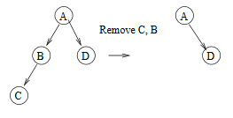

There are a lot of written proof questions in Chapter 4. Those questions offer
great insights on the general techniques in solving algorithmatic proving questions.
So, I decide to record them in this single post. Of course, this post will be continually
updated as I work through the chapter.
Insights
- Recursive tree definition is a natural fit with induction (i.e., MAW 4.5, 4.6, 4.7).
- Usually there are two ways to prove a problem in tree, one direction is from induction
and the other one is from basic tree property (i.e., MAW 4.4, 4.6).
Solutions
MAW 4.4
Show that in a binary tree of \(N\) nodes, there are \(N + 1\) NULL pointers
representing children.
Proof:
For a binary tree with \(N\) nodes, there are two types of edges (pointers):
- edges that are doesn't exist (
NULL pointers).
- edges that exist to connect nodes (not
NULL pointers).
Let's first calculate the number of pointers in total, regardless whether the pointer
is NULL or not. Since each node has \(2\) outgoing pointers,
there are \(2N\) pointers in total. Next, we need to calculate the number of edges that actuall
exist. Since each edge connects some node to its parent, and every node except
the root has one parent. In other words, each node, except the root node, has one incoming
pointer from its parent. So, we have \(N-1\) edges existing. Thus the remaining
\(2N - (N-1) = N+1\) edges are actually non-existing. Thus, we have \(N+1\) NULL pointers.
MAW 4.5
Show that the maximum number of nodes in a binary tree of height \(H\) is \(2^{H+1}-1\).
Proof:
Let's prove this by induction.
Base case: \(H = 0\). A binary tree of height \(0\) has only one node, root. \(2^{H+1}-1\) equals
one for \(H = 0\). Therefore ture for \(H = 0\).
Inductive Hypothesis: Assume that the maximum number of nodes in a binary tree of height \(H\) is
\(2^{H+1}-1\) for \(H = 1, 2, ..., k\). Consider a tree \(T\) of height \(k+1\). The root of \(T\) has
a left subtree and a right subtree each of which has height at most \(k\). These can have
at most \(2^{k+1}-1\) nodes each by the inductive hypothesis. Adding the root node gives the
maximum number of nodes in a binary tree of height \(k+1\),
$$
\begin{equation}
2(2^{k+1} - 1) + 1 = 2^{(k+1)+1} - 1
\end{equation}
$$
MAW 4.6
A full node is a node with two children. Prove that the number of full nodes
plus one is equal to the number of leaves in a nonempty binary tree.
Let's use two methods to prove this question.
Method 1:
Proof:
Let's use the following notation for our proof:
$$
\begin{eqnarray*}
N & = & \text{number of nodes in a nonempty binary tree} \\
F & = & \text{number of full nodes} \\
H & = & \text{number of nodes with one child} \\
L & = & \text{number of leaves}
\end{eqnarray*}
$$
Then, we have \(N = F + H + L \label{eq:1}\). We can get another equation based on the number of
edges: \(N - 1 = 2F + H \label{eq:2}\). \(N-1\) is the number of edges for a \(N\) node binary tree
and \(2F + H\) is another way to calculate the number of edges. Now based on these
two euqations we have:
$$
\begin{eqnarray*}
2F + H + 1 & = & F + H + L \\
F + 1 & = & L
\end{eqnarray*}
$$
Method 2:
Proof:
Let's prove by induction. If there are \(N\) full nodes in a non-empty binary tree
then there are \(N+1\) leaves.
Base case: \(N = 0\) This is ture because the tree has one node and the root is
a leaf.
Inductive hypothesis: Suppose the theorem holds for \(N = 1, 2, ..., k\). Then we
want to show that if there are \(k+1\) full nodes in a non-empty binary tree then there
are \(k+2\) leaves. Pick a leaf node and keep removing its parent recursively
(i.e., remove its parent and then parent's parent and so on) until a full node
is reached. That is, you are traversing from a leaf along the path towards the root,
while removing the nodes along the path before a full node is reached. This full node
becomes a non-full node because one of its child node is removed. At this point the
tree will have one less leaf and one less full node.

Therefore, the tree has \(k\) full nodes after the nodes are removed. By the inductive
hypothesis there are \(k+1\) leaves. Add all the nodes that were removed back into the
tree the same way to create the original tree. We are adding one full node and
one leaf node. Therefore, we have \(k+1\) full nodes with \(k+2\) leaves.
MAW 4.7
Suppose a binary tree has leaves \(l_{1}, l_{2}, ..., l_{M}\) at depths
\(d_{1}, d_{2}, ...,d_{M}\), repectively. Prove that \(\sum_{i=1}^M 2^{-d_{i}} \leq 1\)
and determine when the quality is true.
Proof:
Let's prove this by induction.
Base case: when \(M = 1\), there is one node: the root is a leaf wit depth zero. Then
the sum is one, and claim holds.
Inductive hypothesis: Suppose the theorem is true for all trees with at most \(k\) nodes.
Consider any tree with \(k+1\) nodes. Such a tree consists of an \(i\) node left subtree and
a \(k-i\) node right subtree. By the inductive hypothesis, the sum for the left subtree
leaves is at most one with respect to the left tree root. Because all leaves are one deeper
with respect to the original tree than with respect to the subtree, the sum is at
most \(1/2\) with respect to the root. Similar logic implies that the sum for leaves
in the right subtree is at most \(1/2\) proving the theorem.
The equality is true if and only if every internal node is a full node. In other words,
no nodes have one child. Suppose there is a node with one child, and the equality still
holds. Each time we remove two nodes to create a new tree that has a node with no child.
This new tree has the same property has the previous one, and by the statement we proved
above, we should have the same sum as the old, which is one. Eventually, we are left
with two node, one of them is root. Now, we calculate the sum, which gives \(1/2\). This
is contradiction to the equality.
* ---- Note ---- *
This problem is called Kraft–McMillan inequality,
which is one of fundamental theorem in Information theory. I find this youtube playlist about information theory
is really good as an intro to the field because it doesn't make the material look very daunting and super technical,
which some lecture note manages to achieve.